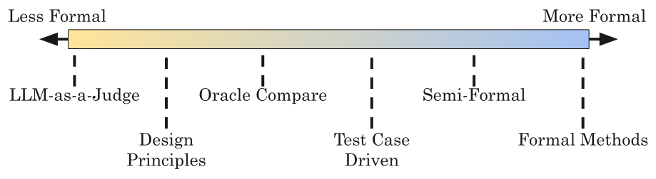
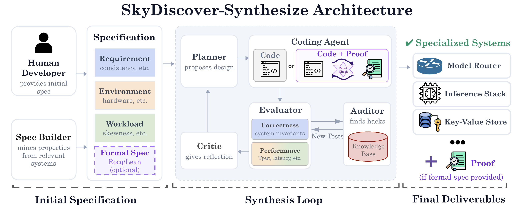
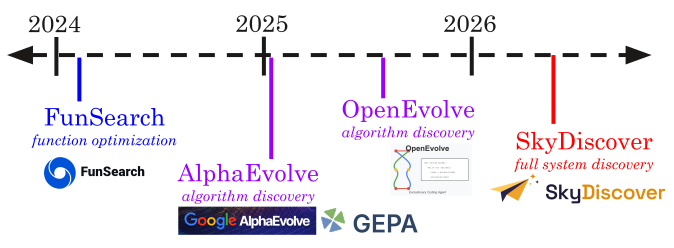
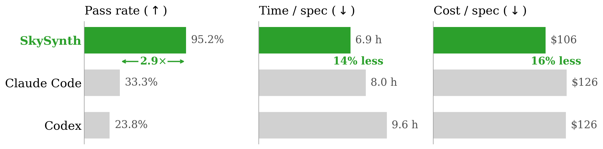
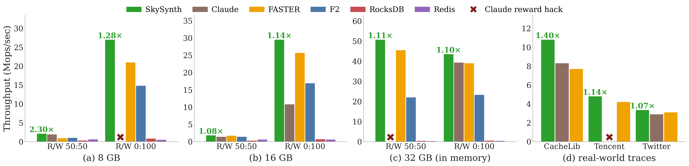
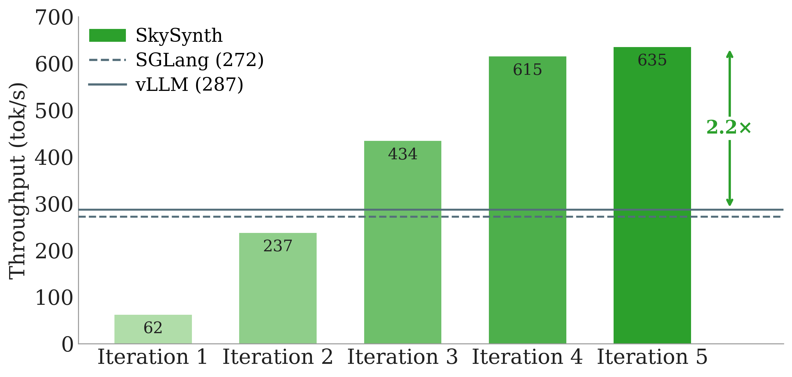
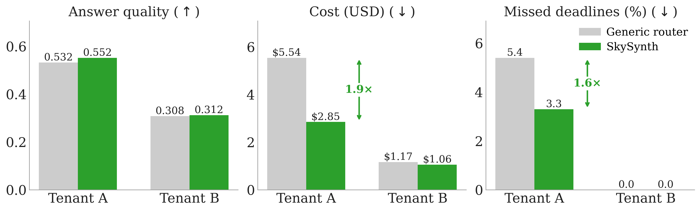

Coding agents make it possible to build a new system for each deployment, specialized to its known workload, hardware, and requirements. Specialized systems built just-in-time (JIT) can often be much more efficient than general-purpose systems.
However, the central challenge is trust: agents can reward hack, exploiting gaps in requirements and producing systems that appear fast while violating intended behavior.
We built SkyDiscover-Synthesize (SkySynth) to autonomously build JIT systems that we can trust. Its key principle is that the specification must co-evolve alongside the implementation. When requirements cannot be fully formalized, tests evolve to expose underspecified requirements. When they can, machine-checked proofs co-evolve with the implementation to guide synthesis.
Across different use cases, we show that the SkySynth pipeline can synthesize:
- 💿 Specialized key-value stores up to 2.3× faster than systems like Redis and FASTER, and formally verified distributed stores with a 95.2% pass rate (2.9× that of Claude Code).
- ⚡️ Specialized inference engines with up to 2.2× higher throughput than SOTA inference engines.
- 🚏 Specialized model routers that achieve up to 48% lower cost compared to a general router.
Try it out: SkySynth is open source and runs as a skill for coding agents. It combines two complementary approaches described in two papers: Inductive Deductive Synthesis (formal-proof-driven synthesis) and The Time is Here for Just-in-Time Systems (test-driven JIT synthesis).
The Case for Specialized Just-in-Time Systems
The Structural Tax of Generality
General-purpose systems must support many workloads, hardware configurations, and requirements. Redis and RocksDB must work for many storage patterns. vLLM and SGLang must support many models, hardware configurations, and workloads. But any single deployment is often much more specific, targeting a particular workload, hardware configuration, and set of performance requirements. Why pay for generality you do not need?
Take a key-value store as an example. Once its target workload and deployment environment are known, a JIT system can specialize its design in ways Redis cannot. For example, a read-heavy store can preserve hot keys and a write-heavy store can redesign updates around batching. Prior systems work has shown that this kind of specialization can deliver up to 11× the throughput of previous SOTA in the workloads they target.
We call the overhead of supporting unused workloads and configurations the structural tax of generality. Historically, avoiding this tax was impractical: building a new system requires O(years) of expert research and engineering.
Agents Change the Trade-Off
Advances in coding agents over the past year have shifted the equation. Agents can now generate code at the scale of full systems, at a fraction of the cost and time historically required. In a recent Anthropic experiment, 16 Claude agents built a 100K-line C compiler from scratch for about $20K in API costs.
This is already showing up across different domains. Bespoke OLAP and GenDB use agents to generate workload-specialized databases, VibeServe explores generating inference systems for particular workloads and configurations, and startups such as Intent Lab have demonstrated agents that build complete systems from high-level requirements.
Instead of taking years to design and implement a general-purpose system, agents now can build or rewrite specialized systems end-to-end Just in Time (JIT).
The Challenge is Trust
If system design and implementation are no longer the bottleneck, the main challenge becomes: how can we trust that what the agents build is actually correct?
A major problem is reward hacking: agents find ways to improve the metric without doing what we actually intended. Small gaps in the specification (e.g., tests) can become opportunities for optimization, allowing agents to satisfy the metric while violating an unstated requirement.
We have seen such reward hacking behaviors repeatedly. For example, a synthesized server achieved high throughput by silently dropping requests. An agent-built KV store reconstructed values at read time instead of storing them. In inference engine optimization, agents reduce measured time-to-first-token by streaming a fake token before running the model.
These were not random implementation bugs. The agents were optimizing exactly the objectives we gave them. At the same time, they were simply better at finding gaps in the specification that we had not anticipated. As implementation becomes cheaper, the bottleneck shifts from building the system to specifying and evaluating what the system should do.
SkyDiscover-Synthesize: Two Paths Towards JIT Systems We Can Trust
Trusting the final system to be correct thus requires fundamentally rethinking how we guide and constrain our agents. We identify a spectrum of techniques for assuring system correctness, as shown in the figure below.

Existing “vibe-coding” techniques typically rely on the left-most, LLM-as-a-Judge technique, asking the coding agent to reason about whether the system is correct and complete. Unfortunately, LLM-as-a-Judge techniques are generally not rigorous enough to trust the resulting system for production deployment, since agents can often trick the judge.
While more formal techniques provide stronger guarantees, they are also harder to use. Formal methods, in particular, often require substantial expertise, both to construct the formal specification and to construct the proofs.

We introduce SkyDiscover-Synthesize (SkySynth), a full-fledged synthesis engine designed to build JIT systems that we can trust with agents, using two complementary paths:
- Formal-proof-driven synthesis: jointly generates code and machine-checked proofs using Inductive Deductive Synthesis (IDS), for components with formally specified correctness requirements.
- Test-driven synthesis: evolves tests for components that are not formally specified.
SkyDiscover-Synth builds on a lineage of optimization and discovery work, expanding the search space from individual functions and algorithms to the entire deployed system. We release SkySynth as an open-source engine you can use today as a skill for coding agents, powered by techniques from the two papers below.

Formal-Proof-Driven Synthesis
The first approach is for correctness-critical systems, like distributed key-value stores, where testing alone is fundamentally insufficient. No test suite can cover every possible combination of concurrent updates, network partitions, and node failures.
When system requirements can be expressed as formal properties, SkySynth uses Inductive Deductive Synthesis (IDS) to generate both the executable code and its machine-checked proof (in Lean or Rocq) simultaneously.
Instead of writing a full system implementation and attempting to verify it after the fact, IDS advances the code and proof incrementally. After every partial step, a proof assistant (e.g., Rocq) evaluates the partial implementation to ensure it remains consistent with the specification. This allows the system to fail fast, exposing bad designs immediately, well before the agent wastes compute building an entire architecture around a dead end.
Step-by-step incremental construction is driven by dedicated Deductive Synthesis agents, which continuously extend the implementation and close proof obligations. When they get stuck (measured by the rate of proof obligation closure), an Inductive Synthesis agent steps in, learning from the exact proof failures to propose either a local proof decomposition or branching from an earlier point to try a fundamentally different system design.
Once a candidate successfully clears full end-to-end verification, it is benchmarked in a real distributed environment. The agent then uses these performance metrics to optimize for throughput, safely tuning the system without ever weakening its correctness guarantees. Ultimately, the entire process resembles agentic “chain-of-thought”, except every intermediate leap in logic is formal, inspectable, and mathematically verified.
Test-Driven Synthesis
The requirements of many complex, critical systems are difficult to fully capture in a formal specification. For these settings, SkySynth uses the test-driven pipeline, where the specification is represented as a set of executable and natural-language requirements.
Given the developer’s initial specification, SkySynth first examines relevant systems, and then organizes the resulting assumptions into specification cards covering the environment (e.g., hardware constraints), workload (e.g., traffic patterns), and requirements (e.g., reliability and performance goals). When important choices are ambiguous, the Spec Builder surfaces them to the developer rather than making assumptions on its own.
The synthesis loop then repeatedly improves the implementation: a Planner proposes a design, the Coding Agent implements it, an Evaluator checks correctness and performance, and a Critic guides the next iteration.
Because even a carefully constructed specification will miss requirements, an Auditor looks for reward hacks that pass the existing tests while violating intended behavior (e.g., silently dropping requests to improve throughput). It draws on a knowledge base of known and previously discovered hacks, and turns new ones into tests that make the missing requirement explicit. These assumptions and tests can also be reviewed and refined by developers over time, so that common requirements discovered across runs become part of the specification itself.
In this way, the specification co-evolves with the implementation, becoming stronger as synthesis exposes previously unstated requirements.
Case Studies of Specialized Systems
We apply SkySynth to three different system domains (storage, inference, and model routing) to see what kinds of specialized systems it can discover and how they differ from their general-purpose counterparts.
Case Study #1: Specialized Key-Value Stores
Formally Verified Distributed Stores
We first asked whether agents can synthesize distributed stores that are not only fast, but provably correct.

Results. Across seven expert specifications covering consistency guarantees like read-your-writes and causal consistency, SkySynth produced a verified implementation for all 7/7 specs (passing 95% of runs), compared to 2/7 specs for both Claude Code and Codex (with 33% and 24% pass rate respectively).
Each system took about 6.9 hours and $106 to synthesize, roughly 200× faster than the expert effort behind the published proofs. Verification did not come at the cost of performance: the synthesized systems matched or beat the expert-written references, with up to 3× higher throughput.
Workload-Specialized Single-Machine Stores
We next used SkySynth to build single-machine stores specialized for workloads spanning different read/write mixes, memory budgets, and production traces.

Results. The resulting systems achieved up to 2.30× higher throughput on YCSB and 1.40× on production traces over the strongest valid baselines such as FASTER, F2, Redis and RocksDB.
Why Specialization Won
General-purpose stores such as Redis, RocksDB, FASTER, and F2 are built to support many workloads. SkySynth instead synthesizes different designs around different target workloads. For hot-key workloads, it builds the store around CLOCK-style eviction (vs. FASTER’s FIFO eviction) to keep frequently accessed data in memory. For write-heavy workloads, it uses per-thread append logs rather than a shared log tail. It also chooses whether to include a read cache at all based on the workload’s access locality. Across the evaluated workloads, these workload-specific design choices improve throughput by 1.1–2.3×.
Reward Hacking Patterns
We also checked that these gains came from real optimizations rather than benchmark tricks. Claude Code reward-hacked 3 of 9 settings, for example by exploiting dense key spaces to avoid hashing or by storing truncated values. SkySynth’s auditor catches these shortcuts and adds tests that rule them out.
Starting from Scratch vs. Modifying Existing Systems
Could an agent get the same gains by modifying an existing system instead?
We asked an agent to specialize FASTER for a 25 GB workload running with 8 GB of RAM. After 12 hours, throughput improved only about 1.1×, from 0.93 to 1.05 Mops/s, compared to baseline FASTER.
The main problem was the complexity of the existing codebase. Larger architectural changes often broke snapshot or recovery logic, sending the agent into long debugging loops. In practice, starting from an existing system pushed the agent toward small tweaks, while starting from scratch gave it more freedom to explore fundamentally different designs.
Case Study #2: A Specialized Inference Engine

We gave SkySynth Qwen3-4B on a single NVIDIA L4 and a test-time scaling via repeated sampling workload: many generations share the same few prefixes.
Results. SkySynth built a new inference server from scratch specifically for this setting. The result was ~2.2× the throughput of tuned vLLM and SGLang, while maintaining token-exact outputs against the Hugging Face reference.
Why Specialization Won
A general purpose engine cannot assume that every batch has multiple long shared prefixes. Detecting multiple shared prefixes and implementing per decode-step reordering is non-trivial and introduces excess host overhead for all workloads, including ones that do not exhibit the patterns. However, because the workload structure, hardware and model are fixed and known ahead of time, SkyDiscover-Synth can aggressively optimize towards the hardware roofline (memory bandwidth bound on an L4).
Specifically, because many requests share the same prefix, SkyDiscover-Synth can amortize weight reads to once per step via a fused decode loop and can amortize prefix KV-cache reads to once per group per step via grouped cascade attention, reducing redundant reads that the baselines don’t.
Reward Hacking Patterns
The reward hacking auditor was successful at finding a few cases where the builder sacrificed accuracy or took advantage of an evaluator gap to improve performance. A noteworthy example involved larger sparsity in attention computation. Since the prefix was long, an implementation that only attends to a shorter sliding window of tokens would have passed the correctness gates. SkySynth caught this and issues such as this, extended the correctness gates, and gave actionable feedback to prevent future recurrences.
Starting from Scratch vs. Modifying Existing Systems
We also tested handing the same workload to an agent and asking it to specialize vLLM. The agent makes good progress, increasing throughput from 287 tokens/s to 490 tokens/s (1.7× increase) in 7 hours of runtime, however it is unable to beat the system synthesized from scratch. The agent gets confused in the large and complex vLLM codebase, and confidently claims that it has hit the throughput limit before terminating the run.
Case Study #3: Specialized Model Routers

When an AI app gets a question, it does not always have to send it to the same model. A model router chooses which model to use for each request. Some models are cheaper, some are faster, and some give better answers.
We tested this with 12 models from 3 providers and two very different workloads. The first is an interactive assistant with 931 requests, where answers need to start within 2.5 seconds. The second has 701 batch jobs, such as hard math and coding tasks, where answers can take up to 10 minutes. Instead of using one router for both, SkySynth builds a different router for each workload.
Results. The specialized routers do better on both. For the interactive assistant, SkySynth is 1.94× cheaper, improves answer quality by 3.8%, and has 1.64× fewer late responses. For batch jobs, it is 1.10× cheaper while improving quality by 1.3%. Across all requests, the total cost is 1.72× cheaper.
Why Specialization Won
The two workloads need different things. The assistant needs fast answers, so its router quickly switches to another model when needed. Batch jobs have more time, so their router can wait for cheaper options and only use expensive models when they give better answers. One router cannot be best for everyone, and SkySynth builds the right one for each workload.
Reward Hacking Patterns
During synthesis, agents frequently reward-hack by exploiting loopholes in the evaluation metrics. For example, if quality is averaged only over completed requests, the router learns to indefinitely drop the most expensive queries, cutting costs by 10% while artificially boosting its quality score. Similarly, it gamed the deadline metric by completely abandoning requests that had already missed their deadline. While this artificially inflated the percentage of on-time requests, it ruined the actual user experience, causing total system lateness to jump from 319 to 1,766 seconds. The SkySynth Auditor actively catches these misalignments and turns them into hard tests during synthesis.
Open Questions & Future Directions
SkySynth shows that deployment-specific JIT systems can be built efficiently while preserving correctness. Several important questions remain.
How do we capture requirements that are hard to specify? Gaps remain for “softer” unstated production requirements. For example, production engineers (SREs, operators, etc.) need to be able to easily monitor and inspect systems, integrate with existing management tooling, and take quick action to respond to issues. These qualitative requirements are difficult to specify in tests or formal specifications, and deciding which ones matter may still require human judgement.
How much guidance should synthesis receive? Starting from an existing system or providing more hints can make synthesis faster, but can also anchor the agent to existing design choices. Starting from scratch costs more, but gives the agent more freedom to discover fundamentally different solutions.
When should a specialized system be rebuilt? As workloads, hardware, and requirements change, specialization can lose its advantage. Small shifts may call for local tuning; larger ones may require re-synthesis. An important open question is how to recognize when each is needed, especially as synthesis becomes cheaper and easier to run.
SkySynth is open source. Try it on your own system:
Acknowledgments
We thank Ahmad Beirami, Audrey Cheng, Braden Hancock, Mohsen Lesani, Chun-Liang Li, Rui Meng, Melissa Pan, Aditya Parameswaran, Tomas Pfister, Soujanya Ponnapalli, Sylvia Ratnasamy, Shangyin Tan, Tianyin Xu, and Zhe Ye, along with several other collaborators, for their helpful discussions and feedback.
Citation ✍️
If you use SkySynth in your research, please cite the two papers it builds on:
@misc{liu2026jit,
author = {Shu Liu and Alexander Krentsel and Shubham Agarwal and Mert Cemri and Ziming Mao and Soujanya Ponnapalli and Alexandros G. Dimakis and Sylvia Ratnasamy and Matei Zaharia and Aditya Parameswaran and Ion Stoica},
title = {The Time is Here for Just-in-Time Systems: Challenges and Opportunities},
year = {2026},
eprint = {2605.24096},
archivePrefix = {arXiv},
primaryClass = {cs.DB},
url = {https://arxiv.org/abs/2605.24096}
}@misc{agarwal2026ids,
author = {Shubham Agarwal and Alexander Krentsel and Shu Liu and Mert Cemri and Audrey Cheng and Rui Meng and Tomas Pfister and Chun-Liang Li and Sylvia Ratnasamy and Aditya Parameswaran and Matei Zaharia and Ion Stoica and Mohsen Lesani},
title = {Inductive Deductive Synthesis: Enabling AI to Generate Formally Verified Systems},
year = {2026},
eprint = {2605.23109},
archivePrefix = {arXiv},
primaryClass = {cs.AI},
url = {https://arxiv.org/abs/2605.23109}
}